Bi-pedal jumping robot
From hand sketches to two complete CAD iterations. The second redesign added 0.4 kg of actuation and doubled the design speed, because springs alone can’t jump.
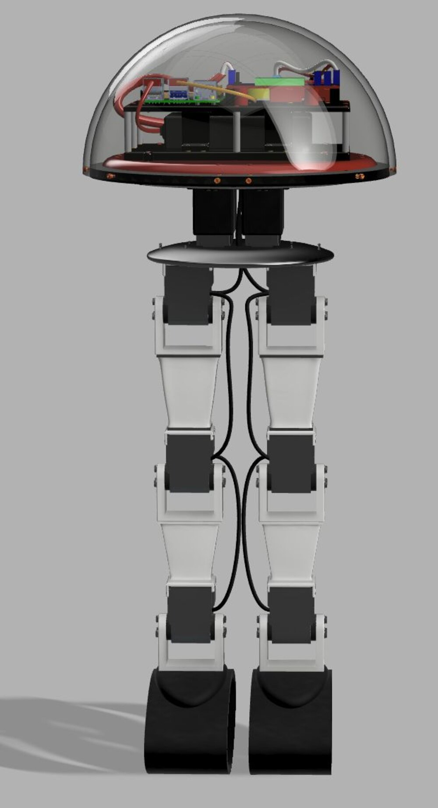
The brief
Design a bi-pedal robot capable of running or jumping, carrying its own compute, power and sensing, and built from organic rather than boxy geometry. The work ran from concept sketches through to a fully specified CAD assembly with a bill of materials.
Three concepts
I started with three directions, each sketched by hand with its own power budget, mass breakdown and torque estimate, so the comparison was quantitative rather than aesthetic.
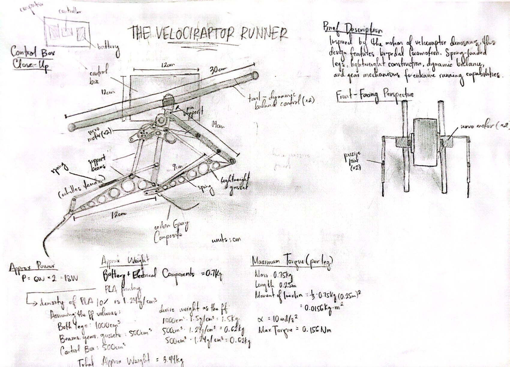
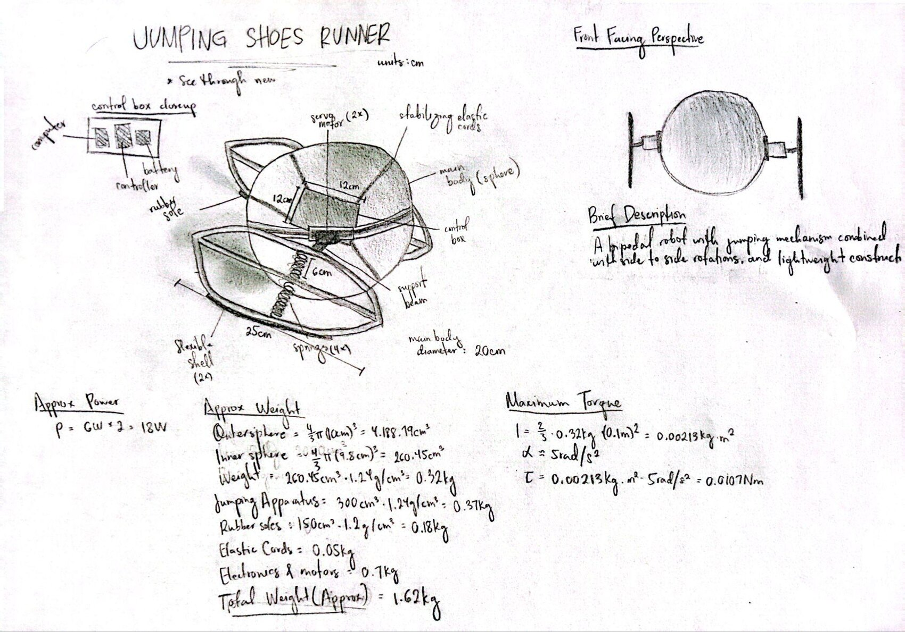
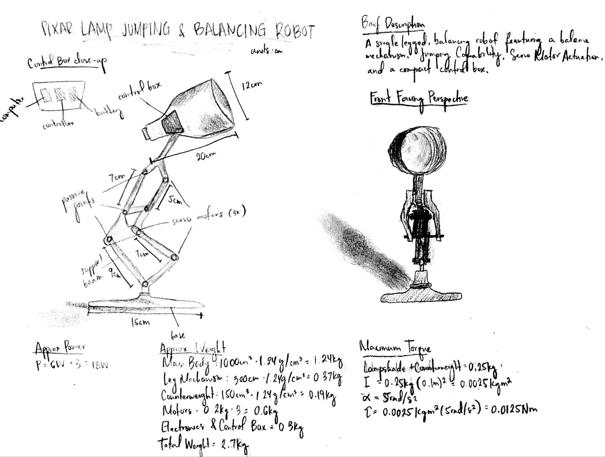
Concept 2 won on the numbers. The lowest mass gave the best thrust-to-weight for jumping, the spherical body kept the centre of mass low and central, and two legs avoided the balancing problem that Concept 3 would have spent the whole project solving.
First iteration
The first CAD build took the spherical concept seriously. A transparent outer shell carries two internal plates — battery and controller on the lower level, Raspberry Pi, DC converter and IMU on the upper — and eight elastic cables suspend the inner sphere inside the outer one.
That cable suspension came from building stabilization, specifically the tuned mass damper hung inside Taipei 101. The idea was that an inner mass decoupled from the shell would damp landing shock the same way the damper absorbs seismic and wind energy, rather than transmitting every impact straight into the electronics.
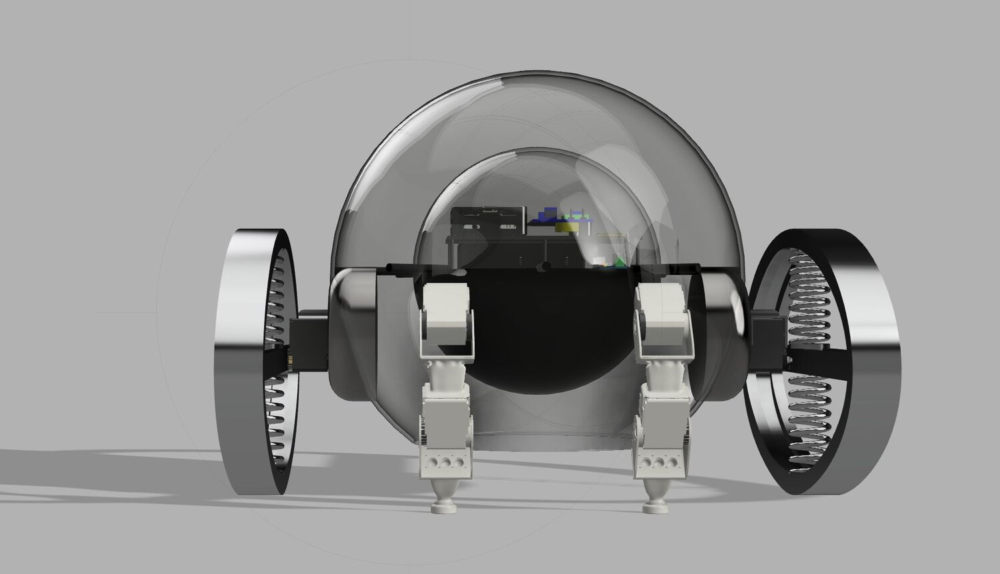
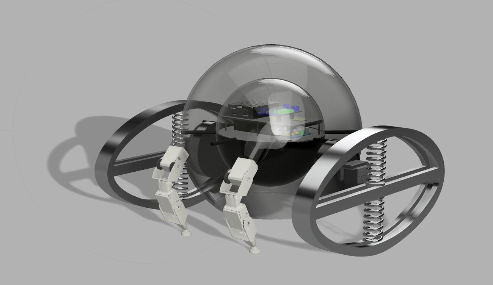
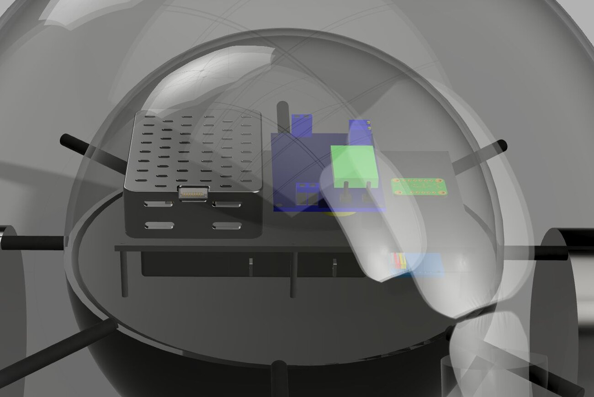
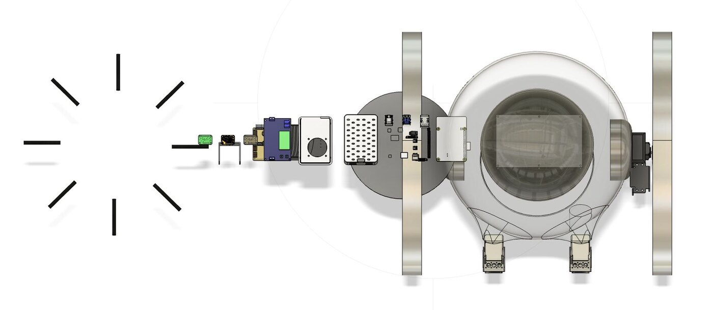
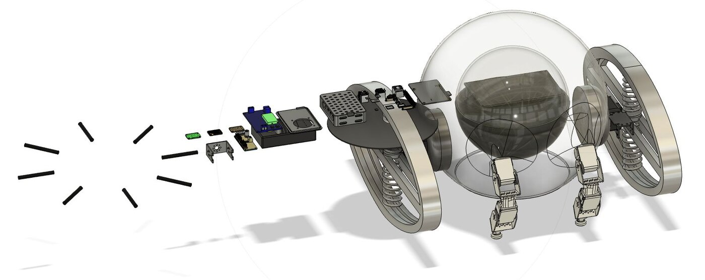
Why it was wrong
The first design rotated the jumping apparatus and nothing else. The legs held a fixed geometry while spring-loaded shoes spun beneath them, and the assumption was that stored spring energy would be enough to leave the ground.
It is not. A spring only returns energy that has been put into it, and compressing it requires the robot to crouch and then extend — to bend at the knee and push. Without actuated joints there is no mechanism to load the spring in the first place, so the shoes would have rotated against the ground without ever generating lift. The design could roll; it could not jump, which was the one thing it was for.
Second iteration
The redesign gave each leg three motor-driven joints standing in for hip, knee and ankle, so the robot can crouch, load the springs and extend through a real push-off. The sphere became a semi-sphere to cut chassis mass back toward where it started, and the cable suspension gave way to rigid bracketing with spacers, through-holes and threaded inserts — once the legs absorb landing loads through articulation, the shell no longer has to.
A rotating plate between the chassis and the legs was added last, representing the twist of a spine and hips. It swings the legs under the body to redirect travel and shift weight distribution mid-stride, which is how a runner changes direction without stopping.
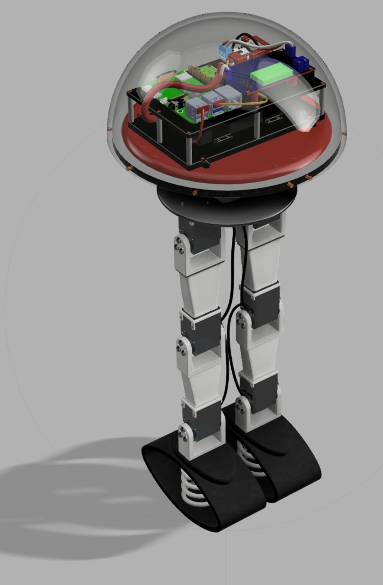
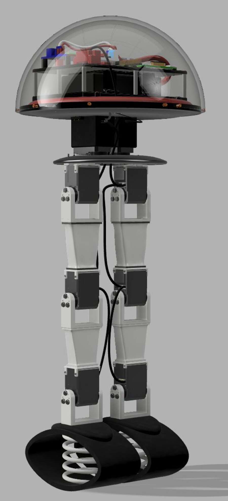
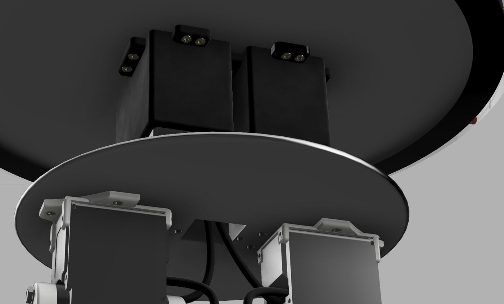
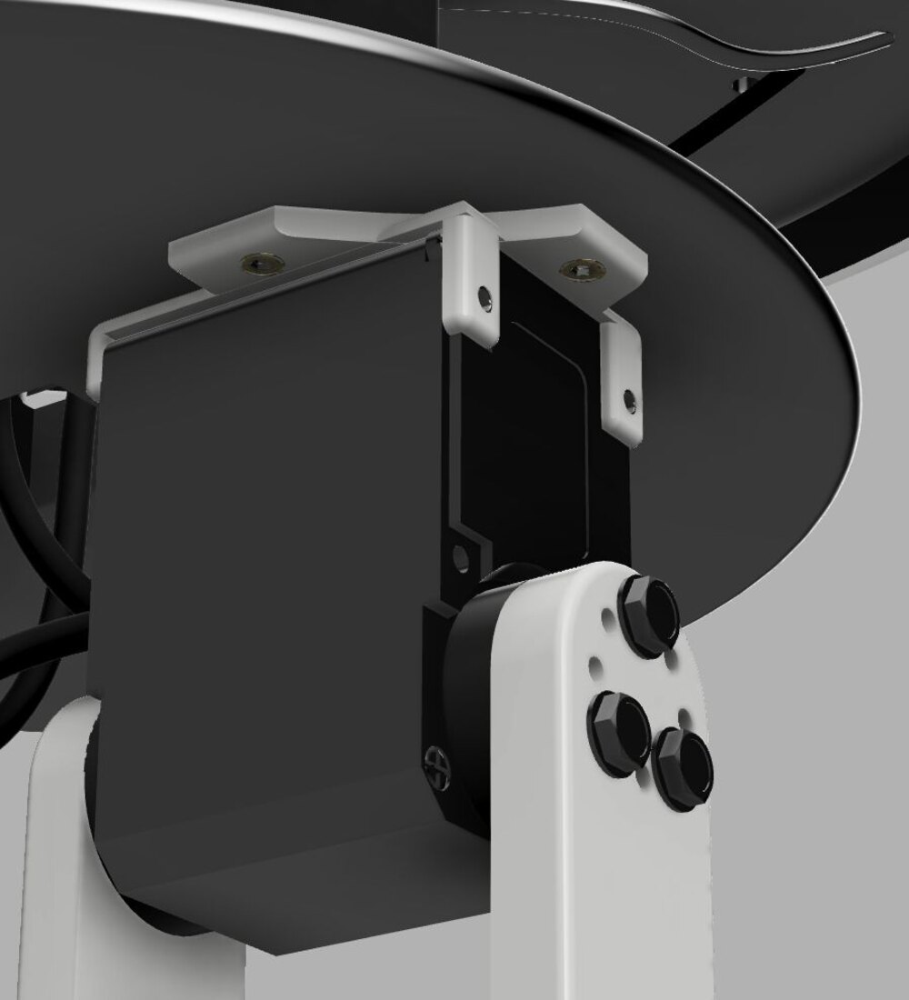
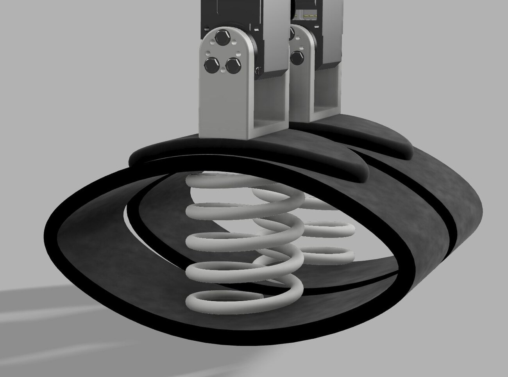
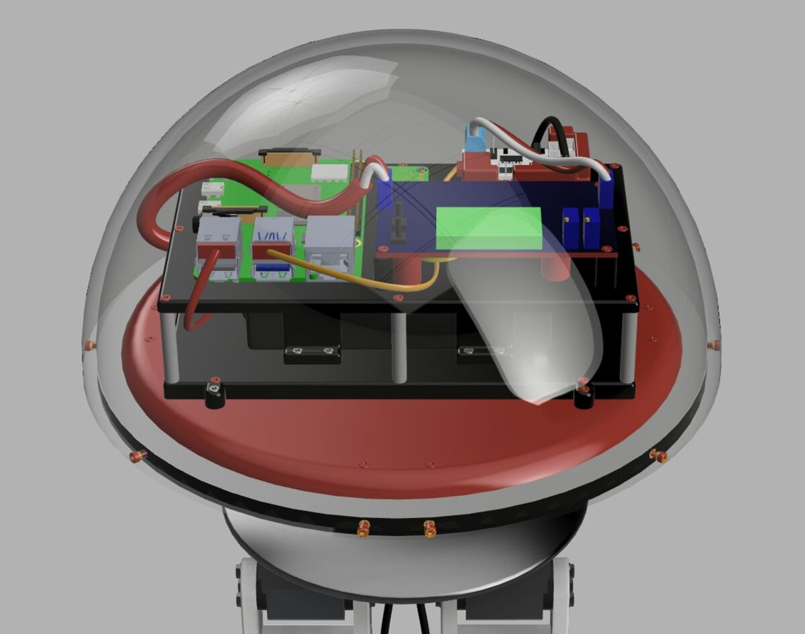
What the redesign cost and bought
Two more servos and the articulated legs added 0.4 kg, a 19% increase. Design speed went from 0.2 to 0.4 m/s. Spending a fifth of the mass budget to double the speed is a good trade, and more to the point the second design can perform the motion the first one was named for.
| First iteration | Second iteration | |
|---|---|---|
| Servo motors | 6 | 8 |
| Joints per leg | 0 (rigid) | 3 |
| Mass | 2.1 kg | 2.5 kg |
| Design speed | 0.2 m/s | 0.4 m/s |
| Body | Double sphere, cable-suspended | Semi-sphere, rigid bracketing |
| Directional control | None | Rotating plate |
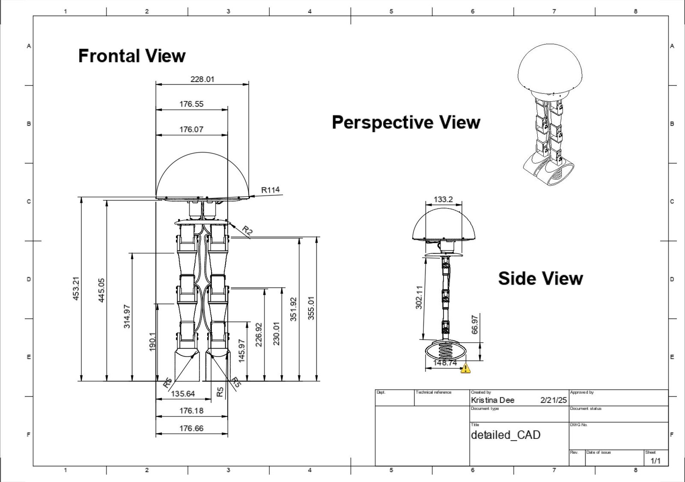
Where it stands
This is a design study, not a built robot. The second iteration is fully modeled, rendered, dimensioned and costed through a bill of materials, with the electronics package resolved down to mounting hardware — but nothing was fabricated, and the speed and mass figures are estimates from the model rather than measurements.
The part worth taking from it is the correction between the two iterations. Finding that a jumping robot needs actuated joints before it needs springs, and rebuilding the leg architecture around that, was the real work.
Animation Jumping shoe on GrabCAD
- Course
- MECE 4611
- Dates
- Spring 2025
- Work
- Individual
- Tools
- SolidWorks, photorealistic rendering, hand sketching